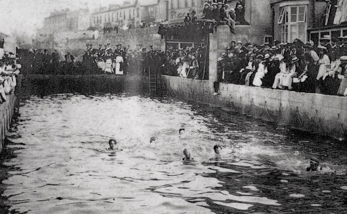
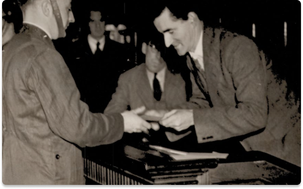
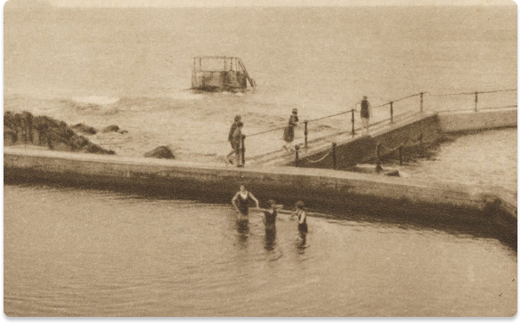
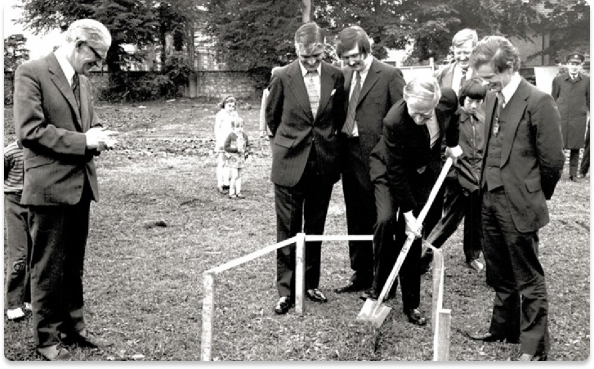
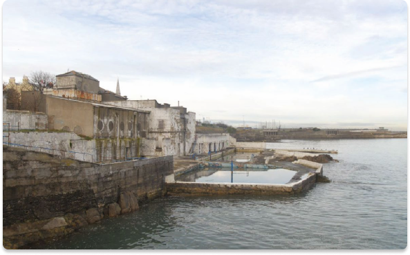
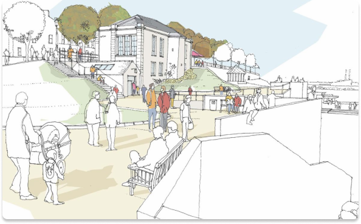
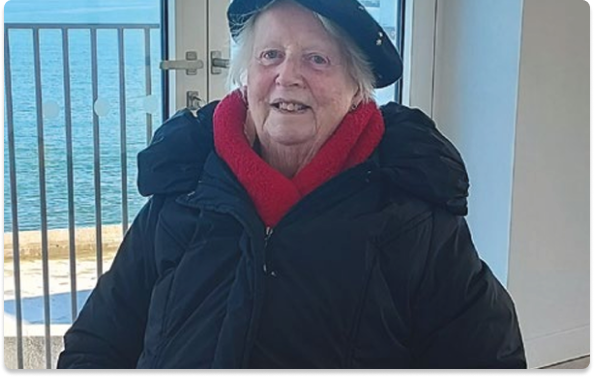
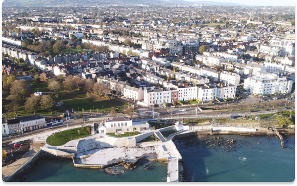

Royal Victorian Baths built by private developer, John Crosthwaite. Situated on a smaller site closer to the East Pier.
The Royal Victorian Baths in Kingstown, reopened on Saturday, 4th July 1908, epitomized the zenith of leisure and wellness culture of the era, with the urban District Council investing over £11,000 in this modern Hydropathic Establishment. Featuring advanced facilities for sea bathing, it catered to both gentlemen and ladies with separate swimming ponds and showers, enhancing privacy and comfort with furnished dressing boxes for ladies. This ambitious project underscored Kingstown's determination to rival other prestigious watering places by providing unparalleled bathing facilities. The council's investment signified a strategic move to position Kingstown as a premier destination for health and relaxation, emphasizing the importance of having a state-of-the-art system of baths for the town's social and economic growth.
The Emergency (World War II) - Council personnel, including Baths staff, were deployed on additional duties.
Dún Laoghaire Baths advertised as full spa treatment resort, as well as the core swimming attractions. Patrons included jockeys from Leopardstown Racecourse, using the steam rooms on Race Days.
The Blue Pool Monkstown opens - the Council's first indoor heated swimming facilities. During 1980s, iconic laundry chimney demolished. In 1982, Dún Laoghaire, and Blackrock Baths threatened with Summer closing due to lack of funds - £75,000 needed to keep the Baths going. Opening hours reduced. In 1985, the Rainbow Rapids open.
The Baths close. The closure of the Dún Laoghaire Baths, a historic seaside gem once bustling with activity, marks the end of an era for the local community and visitors alike.
In 2005, controversial redevelopment plans shelved after unprecedented level of local protest. In 2016, drawings of redevelopment proposal, without swimming baths, unveiled.
In 2018, building contract signed and work on the site begins. In 2020, COVID lockdown halts progress. In 2022, public re-opening - 13th December Anna Murray (née Hill) who was born in the Dún Laoghaire Baths in 1932, is the first member of the public to visit the redeveloped site in November 2022.
Envision the Dún Laoghaire Baths as an ethereal canvas where history and future merge in a symphony of architectural beauty and cultural vibrancy. Amidst its rejuvenated quays and gardens, Dun Laoghaire Baths will stand as a testament to the enduring spirit of community and the transformative power of vision.
